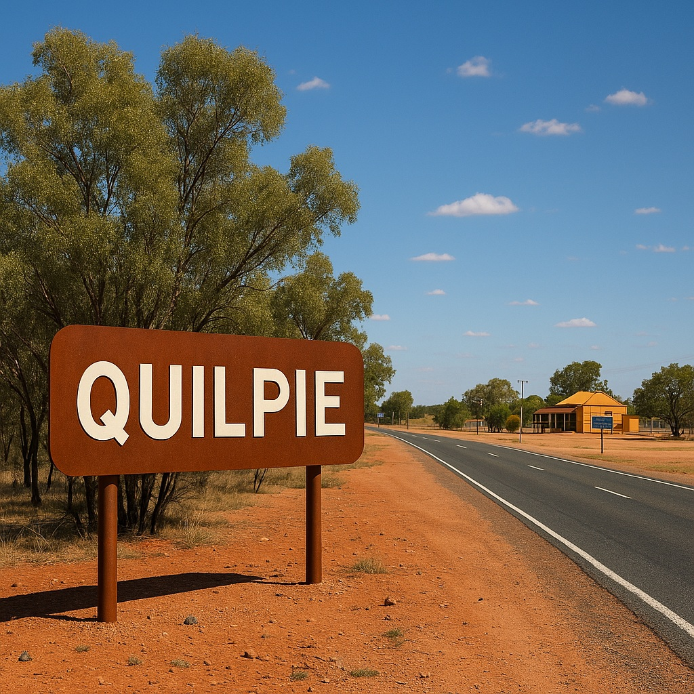

Quilpeta Night Show
Experience a sound-and-light presentation celebrating Quilpie’s history, First Nations connections, pioneering stories and relationship with the surrounding Channel Country landscape.

Quilpie is a welcoming outback town in southwest Queensland, positioned beside the Bulloo River in the heart of the Channel Country. Surrounded by open plains, red earth, mulga country and expansive skies, the town provides visitors with an authentic introduction to life in remote western Queensland.
The township developed during the early twentieth century following the discovery of opal in the surrounding district and the arrival of the railway. These developments helped establish Quilpie as an important service centre for nearby pastoral properties, mining activity and isolated communities.
Quilpie is particularly well known for Queensland boulder opal. The colourful gemstone forms inside ironstone and has played an important role in the identity, economy and visitor appeal of the district. Local museums, fossicking areas and community displays help explain this distinctive part of the region’s history.
The pastoral industry remains another defining part of Quilpie’s character. Cattle and sheep properties extend across the surrounding landscape, while the town continues to provide essential services for residents, station families and travellers crossing the Channel Country.
Visitors can explore railway and military history, view locally mined opal, enjoy panoramic scenery from Baldy Top and experience the Bulloo River. Further south, the historic Toompine Hotel provides a glimpse of the isolated stopping places that once served the district’s pastoral and mining routes.
With its strong community spirit, remarkable sunsets and long connection to opal, rail and pastoral life, Quilpie offers an engaging outback destination for travellers interested in Queensland’s remote towns and regional stories.
Experience a sound-and-light presentation celebrating Quilpie’s history, First Nations connections, pioneering stories and relationship with the surrounding Channel Country landscape.
Discover the role the railway played in the development of Quilpie and the wider district through historical displays, railway memorabilia and stories connected with transport in remote Queensland.
Explore displays honouring local service personnel and learn about the district’s connections with Australian military history through photographs, records, uniforms and historical artefacts.
Begin your visit with local travel information, community history, exhibitions, regional artwork and displays exploring the natural and cultural heritage of Quilpie Shire.
Visit one of Quilpie’s most distinctive heritage buildings, best known for its altar featuring locally sourced boulder opal and its connection with the town’s Catholic community.
Travel south of Quilpie to the historic Toompine Hotel, often described as the pub without a town. The hotel reflects the isolated stopping places that supported pastoral properties, travellers and mining communities.
Stop beside this unusual roadside landmark near Quilpie, which highlights an extraordinary collection of destinations and the vast distances associated with travel through inland Australia.
Climb this accessible rocky formation for sweeping views across the surrounding plains. The elevated outlook is particularly impressive around sunrise and sunset.
View this distinctive local landmark created from an enormous split pin, celebrating outback ingenuity and the work of Quilpie artist and blacksmith Geoff Anderson.
Visit the bridge and river area to appreciate the Bulloo River landscape, seasonal water flows, birdlife and the importance of the river to the Quilpie district.
Try your hand at fossicking and learn why Quilpie is closely associated with Queensland boulder opal, the colourful gemstone found throughout the surrounding ironstone country.
Planning a visit to Quilpie? Explore accommodation within the township and at the historic Toompine Hotel while discovering the museums, opal heritage, pastoral landscapes and Channel Country character of southwest Queensland.
ShowcasingOz TV is designed to do more than help travellers find a place to stay. We help visitors discover where to go, what to experience and where to base themselves while exploring Australia’s regional communities.
View All Quilpie Accommodation
Accommodation partners featured on ShowcasingOz TV receive premium exposure through professionally produced video, photography and destination-led storytelling that places their property in front of travellers actively planning where to stay.
Explore Accommodation Filming & Feature Options
This list is provided for visitor awareness only. Inclusion does not imply partnership or endorsement. Accommodation availability and booking options may change. Some links on this page are affiliate links, which means ShowcasingOz TV may earn a small commission if you make a booking, at no additional cost to you.